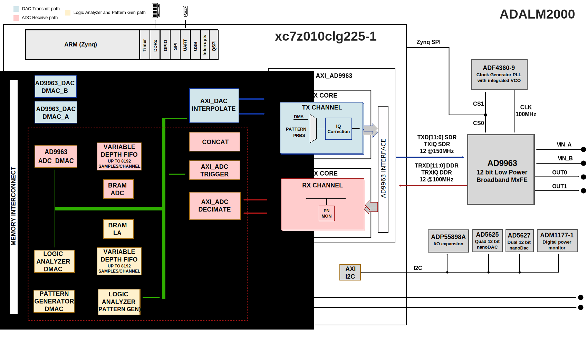

M2K HDL Project
Overview
The ADALM2000 (M2K), is built around the XC7Z010 Xilinx Zynq FPGA.
Booting is done from a 32MB QSPI FLASH, connected directly to the PS7 block.
The system memory is 512MB RAM, which is also used for the file system. The DDR interface is a 16 bits interface running at 500 MHz. The frequency was chosen so that a single PLL runs inside of the PS7 block generating all the required PS7 clocks, consuming minimum power.
The FPGA drives 16 GPIOs for the logic analyzer, 2 GPIOs for triggers, a 14 pin interface to the AD9963’s ADC and a 14 pin interface to the AD9963’s DAC. It also has several generic GPIOs, an SPI and an I2C interface for configuring the board.
The control GPIOs and the SPI are driven by the PS7 block in order to minimize the PL resource usage.
The I2C is implemented by an AXI I2C IP because the PS7 I2C has several limitations, which makes it not suitable for this project.
The oscilloscope related logic transfers data from the AD9963 chip with the AD9963 TRX interface goes through the decimation block, the analog triggering block, the history FIFO and streams data to memory using the DMA.
The analog waveform generator transfers data from the memory using two DMAs, then goes through the interpolation block and ends with the AD9963 TX interface, which transfers data to the AD9963 chip. Two DMAs are used in order to have different orders of magnitude for the frequency of the two AWG channels, without needing to transfer a very large number of samples.
The logic analyzer and pattern generator logic are mostly implemented in the same IP to which a history FIFO and DMAs are added.
Supported boards
Supported devices
Block design
Detailed description
The PS7 hardware block is the main processing block of the system, having an ARM processor running at 500MHz. It is running a Linux operating system.
To minimize the power utilization for the design, the PS7 block is the only block generating clocks in the system. The clock configuration is done in such a way that a single PLL is used to derive all the necessary clocks for the ARM processor, the DDR and the peripherals. It generates a 27MHz clock (FCLK0) for the AXI interface and a 55MHz clock for the oscilloscope DMA and one of the two analog waveform generator DMAs.
The PS7 has enabled SPI0, UART1 and USB0 peripherals. The QUAD SPI flash interface is enabled in Single SS 4 bit IO mode.
The DDR interface is a 16 bit interface running at 500MHz.
The HP ports have been assigned in a way to optimize the data throughput through each of the active ports, considering that HP0 and HP1 share the path to memory (same for HP2 and HP3).
BANK 0 and BANK 1 are configured in LVCMOS 1.8V mode.
The AXI_AD9963 IP is implementing the interfacing with the AD9963 chip. It features a dual 12-bit ADC working up to 100MSPS and a dual 12-bit DAC with up to 170MSPS. It also features a DLL, which can provide the clock for both the ADC and the DAC path.
The TRX (ADC) interface is set at 100 MSPS, full duplex mode, double data rate (DDR), two channels. The clock comes from the AD9963 chip. The IO standard is CMOS at 3.3V.
The TX (DAC) interface works at 75 MSPS data rate with interpolation by 2 on the AD9963 chip. The DAC path inside AD9963 chip works at 150MHz, pushing part of the spurs outside the 100MHz bandwidth. Given that the reference clock for AD9963 is 100MHz and DACs maximum sampling rate is 170MSPS, this is the best option available. The 75MHz clock is not available in the FPGA. To reduce the number of PLL used in the FPGA, we are using AD9963 and a BUFR (divide by 2) to generate this clock. When the clock is generated by AD9963, DDR transfer is not available. The TX interface works at 150MHz, SDR. The IO standard is CMOS at 3.3V.
More information at AXI AD9963 documentation.
The AXI_ADC_TRIGGER IP implements triggering for the
ADC path and also controls the TRIGGER pins. It works on two clock
domains, the ADC clock and the AXI interface clock.
The configuration of the IP is done through the AXI interface.
The data path runs at the ADC clock.
Triggers based on the two trigger digital pins, trigger[0] for ADC A and trigger[1] for ADC B can be selected between high, low, any edge, rise edge, fall edge
Triggers based on the analog data on a channel will be active if data is larger than a limit, smaller than a limit, passing through the limit, passing through high or passing through low. The data format must be 2’s complement.
The output of the core can embed the triggers in the data words, as only 12 bits of the 16-bit word are used for data. These need to be extracted before being forwarded to the DMA. Embedding the trigger with the data allows for additional IPs with unknown pipeline length to be introduced in the path.
More information at AXI ADC Trigger documentation.
The UTIL_VAR_FIFO IP allows M2K to store and display
data before the trigger.
In the design, it has a length of 8192 samples and can easily be increased.
The IP controls an external BRAM. If DEPTH is 0, the FIFO is bypassed.
When the DEPTH is changed, the read and write pointers are reset,
effectively resetting the FIFO. There is a 2 cycle clock latency, even if
it’s bypassed. If valid is not always asserted (decimation is active), the
latency is one clock cycle instead of two.
More information at Util VAR FIFO documentation.
The data alignment as event history or alignment between instruments is done via triggers.
The system has two external trigger ports, TI and TO. Both can be used as input or output. By default, TI is input and TO output. The in/out direction is controlled by axi_adc_trigger.
Each instrument can be triggered by an external event or from ADC or LA. The AXI ADC Trigger and AXI Logic Analyzer can generate triggers on well-defined user scenarios.
The instrument trigger of each instance is the same one with the trigger condition set data alignment.
The Util Extract IP will extract the trigger that was embedded in the data stream by the AXI ADC Trigger IP. Not used in the lates design.
More information at Util Extract documentation.
The AD9963 RX interface clock has a set value of 100MHz, so the interface always runs at 100MSPS for each of the two channels. For some applications, 100MSPS are not required and leads to lots of samples transferred to memory, which are redundant. For these cases, the decimation IP is used.
The decimation block allows decimating the input data so that the sampling frequency to be reduced by 10, 100, 1000, 10000, 100000, with filtering. The filtering is implemented by a 6 sections CIC programmable rate filter, which allows decimation by 5/50/500/5000/50000 and a compensation FIR filter (decimation by 2).
At the end of the filter chain, there is an arbitrary decimation block. The arbitrary decimation can be activated independently and it does not implement any type of filtering.
More information at AXI ADC Decimate documentation.
The TX interface is set at 75 MSPS. For some generated signals, this sampling rate is too high and leads to a bad utilization of the memory and the USB bandwidth. In order to avoid that, the interpolation IP can be used.
The interpolation block allows interpolation by 10, 100, 1000, 10000,100000 with filtering. The filtering is implemented using an FIR compensation filter (interpolation by 2) for the CIC and a 6 stage CIC interpolation filter, allowing interpolation by 5/50/500/5000/50000.
At the end of the filter blocks, we have an arbitrary interpolation zero-order hold block which holds the value for a configurable number of samples.
More information at AXI DAC Interpolate documentation.
The AXI Logic Analyzer IP implements both the logic analyzer and the pattern generator, as they share the same pins.
There are 16-channel digital I/O pins running at 100 MSPS. All the pins can be configured either as inputs (logic analyzer) or outputs (pattern generator). The logic analyzer path allows a pre trigger history of 8192 samples per channel.
The pattern generator supports open drain outputs, configurable per pin. Additionally to the 16 data pins, there are two trigger pins, which can be configured as input or output. Because they can be used with either analog or digital instruments, they are controlled by the AXI_ADC_TRIGGER IP.
The logic analyzer path can work at lower than the 100MSPS rate by configuring the down sampling block. The same thing is done for the pattern generator by configuring the up sampling block.
Triggering for the logic analyzer is implemented in this IP. It can generate triggers based on the external trigger signals and the 16-bit input signals. For each of the 18 pins it can detect rise edge, fall edge, any edge, high or low.
To provide data before triggering, a variable length FIFO is used
with this IP. The depth of the FIFO is configured through the
TRIGGER_OFFSET register. It can be bypassed if TRIGGER_OFFSET is 0.
If the FIFO is active, it is filled before being read, not forwarding any
data until it is full. The maximum size of the FIFO is 8192 samples. The FIFO
is implemented using BRAM blocks configured for minimal power consumption.
More information at AXI Logic Analyzer documentation.
Location |
Name |
Notes |
|---|---|---|
BANK 35, 3.3V. No pins available |
||
F14 |
IIC_SCL |
Enable pull-up |
F13 |
IIC_SDA |
Enable pull-up |
E12 |
AD9963_RESETN |
Reset for the AD9963 chip |
G15 |
ADF4360_CS |
SPI interface, chip select for ADF4360 |
E11 |
AD9963_CSN |
SPI interface, chip select for AD9963 |
E13 |
SPI_CLK |
SPI interface, clock |
F12 |
SPI_SDIO |
SPI interface, data |
F15 |
EN_POWER_ANALOG |
Power on analog path |
BANK 34, 3.3V. No pins available |
||
M12 |
TRIGGER[0] |
Trigger pin 0 |
N12 |
TRIGGER[1] |
Trigger pin 1 |
K11 |
DATA_BD[0] |
Data pin 0. SRCC |
K12 |
DATA_BD[1] |
Data pin 1 |
K13 |
DATA_BD[2] |
Data pin 2 |
L13 |
DATA_BD[3] |
Data pin 3 |
L14 |
DATA_BD[4] |
Data pin 4 |
M14 |
DATA_BD[5] |
Data pin 5 |
L15 |
DATA_BD[6] |
Data pin 6 |
M15 |
DATA_BD[7] |
Data pin 7 |
N13 |
DATA_BD[8] |
Data pin 8 |
P14 |
DATA_BD[9] |
Data pin 9 |
R12 |
DATA_BD[10] |
Data pin 10 |
R13 |
DATA_BD[11] |
Data pin 11 |
P11 |
DATA_BD[12] |
Data pin 12 |
R11 |
DATA_BD[13] |
Data pin 13 |
P15 |
DATA_BD[14] |
Data pin 14 |
R15 |
DATA_BD[15] |
Data pin 15 |
N11 |
RX_CLK |
AD9963 RX interface clock. MRCC |
P13 |
RX_IQ |
AD9963 RX IQ pin |
P10 |
RXD[0] |
AD9963 RX data pin 0 |
R10 |
RXD[1] |
AD9963 RX data pin 1 |
P8 |
RXD[2] |
AD9963 RX data pin 2 |
P9 |
RXD[3] |
AD9963 RX data pin 3 |
N7 |
RXD[4] |
AD9963 RX data pin 4 |
N8 |
RXD[5] |
AD9963 RX data pin 5 |
M10 |
RXD[6] |
AD9963 RX data pin 6 |
M11 |
RXD[7] |
AD9963 RX data pin 7 |
R7 |
RXD[8] |
AD9963 RX data pin 8 |
R8 |
RXD[9] |
AD9963 RX data pin 9 |
M9 |
RXD[10] |
AD9963 RX data pin 10 |
N9 |
RXD[11] |
AD9963 RX data pin 11 |
L12 |
TX_CLK |
AD9963 TX interface clock. MRCC |
N14 |
TX_IQ |
AD9963 TX IQ pin |
H12 |
TXD[0] |
AD9963 TX data pin 0 |
G11 |
TXD[1] |
AD9963 TX data pin 1 |
H13 |
TXD[2] |
AD9963 TX data pin 2 |
G12 |
TXD[3] |
AD9963 TX data pin 3 |
H14 |
TXD[4] |
AD9963 TX data pin 4 |
G14 |
TXD[5] |
AD9963 TX data pin 5 |
K15 |
TXD[6] |
AD9963 TX data pin 6 |
J15 |
TXD[7] |
AD9963 TX data pin 7 |
J14 |
TXD[8] |
AD9963 TX data pin 8 |
J13 |
TXD[9] |
AD9963 TX data pin 9 |
J11 |
TXD[10] |
AD9963 TX data pin 10 |
H11 |
TXD[11] |
AD9963 TX data pin 11 |
BANK 500, 1.8V. 3 Available pins |
||
PS_MIO1 |
QSPI0_SS |
QSPI FLASH |
PS_MIO2 |
QSPI0_IO0 |
QSPI FLASH |
PS_MIO3 |
QSPI0_IO1 |
QSPI FLASH |
PS_MIO4 |
QSPI0_IO2 |
QSPI FLASH |
PS_MIO5 |
QSPI0_IO3 |
QSPI FLASH |
PS_MIO6 |
QSPI0_SCLK |
QSPI FLASH |
PS_MIO7 |
VDD (1.8) |
|
PS_MIO8 |
VDD (1.8) |
|
PS_MIO12 |
UART_TX |
Debug UART |
PS_MIO13 |
UART_RX |
Debug UART |
PS_MIO14 |
USR_BTN |
Button |
PS_MIO15 |
USR_LED |
LED |
PS_MIO9 |
— |
Available |
PS_MIO10 |
— |
Available |
PS_MIO11 |
— |
Available |
BANK 501, 1.8V. 3 Available pins |
||
PS_MIO28 |
USB0_D4 |
USB |
PS_MIO29 |
USB0_DIR |
USB |
PS_MIO30 |
USB0_STP |
USB |
PS_MIO31 |
USB0_NXT |
USB |
PS_MIO32 |
USB0_D0 |
USB |
PS_MIO33 |
USB0_D1 |
USB |
PS_MIO34 |
USB0_D2 |
USB |
PS_MIO35 |
USB0_D3 |
USB |
PS_MIO36 |
USB0_CLK |
USB |
PS_MIO37 |
USB0_D5 |
USB |
PS_MIO38 |
USB0_D6 |
USB |
PS_MIO39 |
USB0_D7 |
USB |
PS_MIO52 |
USB_RESET_B |
USB |
PS_MIO48 |
— |
Available |
PS_MIO49 |
— |
Available |
PS_MIO53 |
— |
Available |
Block diagram
The data path and clock domains are depicted in the below diagram.
{kind=link}
CPU/Memory interconnects addresses
The addresses are dependent on the architecture of the FPGA, having an offset added to the base address from HDL (see more at CPU/Memory interconnects addresses).
Instance |
Zynq |
|---|---|
axi_iic_main |
0x4160_0000 |
logic_analyzer |
0x7010_0000 |
axi_ad9963 |
0x7020_0000 |
logic_analyzer_dmac |
0x7C40_0000 |
pattern_generator_dmac |
0x7C42_0000 |
ad9963_adc_dmac |
0x7C44_0000 |
ad9963_dac_dmac_b |
0x7C46_0000 |
ad9963_dac_dmac_a |
0x7C48_0000 |
adc_trigger |
0x7C4C_0000 |
axi_adc_decimate |
0x7C50_0000 |
axi_dac_interpolate |
0x7C5A_0000 |
SPI connections
The SPI signals are controlled by a separate AXI based SPI core.
SPI type |
SPI manager instance |
SPI subordinate |
CS |
|---|---|---|---|
PS |
SPI 0 |
AD9963 |
0 |
GPIOs
The device control and monitor signals are interfaced to a GPIO module.
GPIO signal |
Direction |
HDL GPIO EMIO |
Software GPIO |
|---|---|---|---|
(from FPGA view) |
Zynq-7000 |
||
en_power_analog |
OUTPUT |
1 |
55 |
ad9963_resetn |
OUTPUT |
0 |
54 |
Interrupts
Below are the Programmable Logic interrupts used in the project.
Instance name |
HDL |
Linux Zynq |
Actual Zynq |
|---|---|---|---|
axi_iic_main |
14 |
58 |
90 |
logic_analyzer_dmac |
13 |
57 |
89 |
pattern_generator_dmac |
12 |
56 |
88 |
ad9963_adc_dmac |
10 |
54 |
86 |
ad9963_dac_dmac_a |
9 |
53 |
85 |
ad9963_dac_dmac_b |
8 |
52 |
84 |
Building the HDL project
The design is built upon ADI’s generic HDL reference design framework. ADI distributes the bit/elf files of these projects as part of the ADI Kuiper Linux. If you want to build the sources, ADI makes them available on the HDL repository. To get the source you must clone the HDL repository.
Go to the hdl/projects/m2k location and run the make command.
Linux/Cygwin/WSL
~$
cd hdl/projects/m2k
~/hdl/projects/m2k$
make
A more comprehensive build guide can be found in the Build an HDL project user guide.
Building the M2K firmware
Check out the build section from the README.md: https://github.com/analogdevicesinc/m2k-fw.
Resources
More information
Support
Analog Devices, Inc. will provide limited online support for anyone using the reference design with ADI components via the EngineerZone FPGA reference designs forum.
For questions regarding the ADI Linux device drivers, device trees, etc. from our Linux GitHub repository, the team will offer support on the EngineerZone Linux software drivers forum.
For questions concerning the ADI No-OS drivers, from our No-OS GitHub repository, the team will offer support on the EngineerZone microcontroller No-OS drivers forum.
It should be noted, that the older the tools’ versions and release branches are, the lower the chances to receive support from ADI engineers.